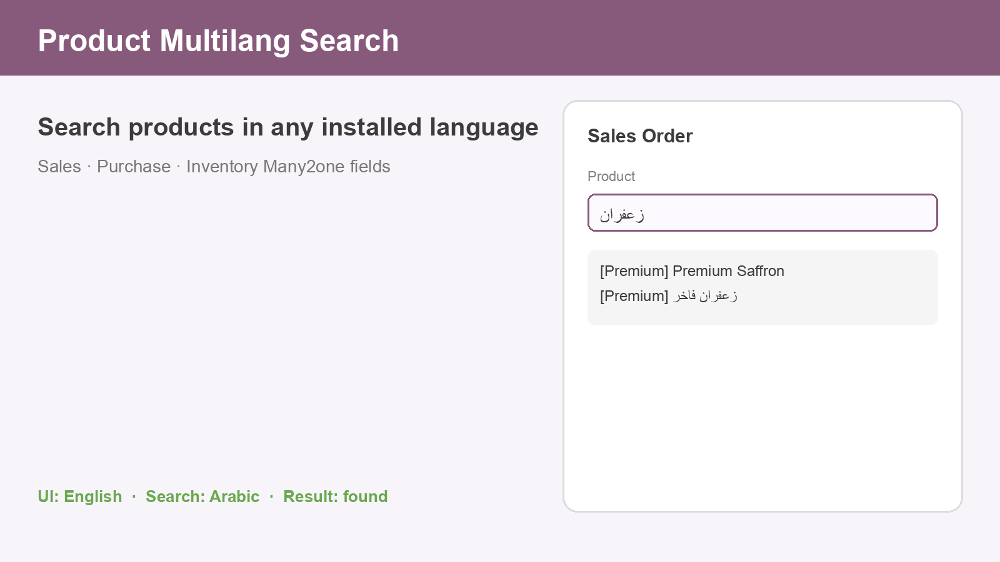
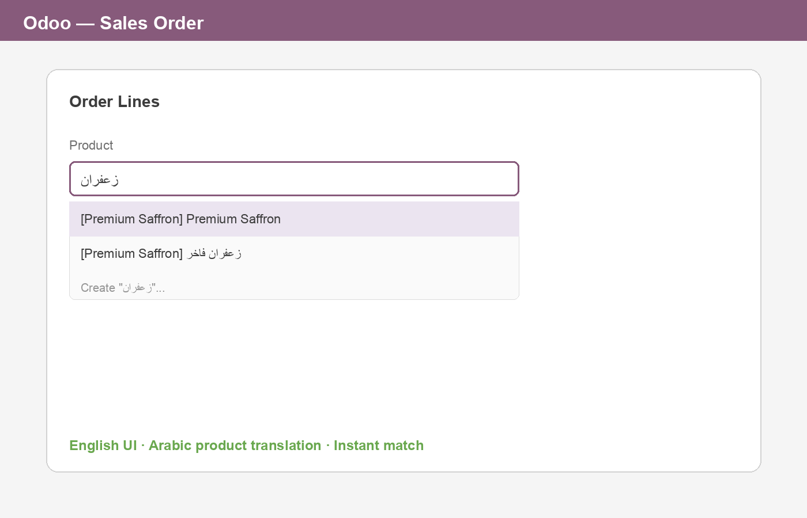

Find products on sales, purchase, and inventory lines when you type a translated name, even if your user interface is in another language.
Matches product names from all installed languages.
Install the module and use standard product Many2one fields.

Works wherever Odoo searches products by name on documents.
Keeps matches in the active UI language at the top of results.
Depends only on the standard product application.
A product is named Premium Saffron in English and زعفران فاخر in Arabic. With the UI in English, typing زعفران on a sales order line still finds the product.

No external API, activation key, or subscription is required.